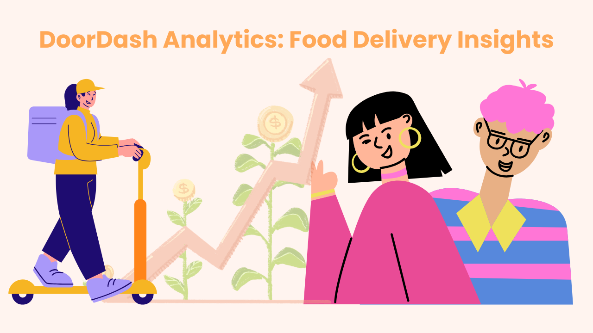

Who’s Hitting ‘Order Now’? Understanding What Drives Food Delivery Choices
I went from rarely ordering food in college to relying on delivery more often than I expected. That change made me wonder—are others experiencing the same shift, and what does the data say about age, income, and ordering behavior?